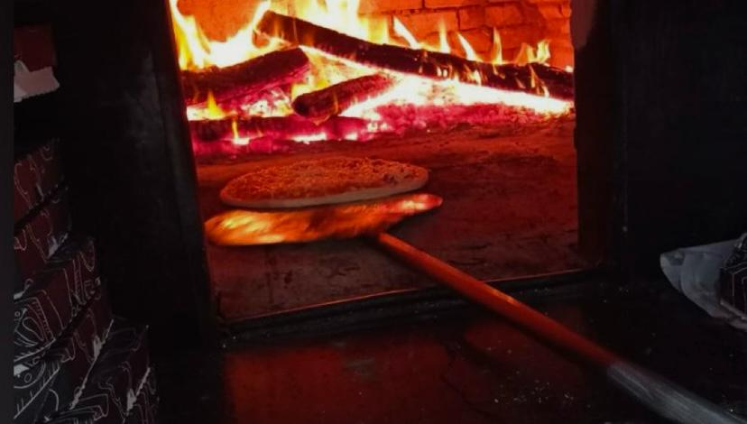

Nossa História

Nilton Bardella e Geni Bardella quando moravam em São Paulo, já tinham o sonho de abrir o Futebol Society Bardella (uma quadra de futebol). Então em 2008, após se mudarem para União da Vitória, conseguiram realizar esse sonho. A pizzaria Bardella surgiu logo depois do Futebol Society Bardella, sendo o sonho atual de Geni. Em 2011 um casal de amigos que trabalhava em pizzarias se mudou para União da Vitória e com isso, Geni compartilhou sua ideia de abrir um novo negócio - a pizzaria - o casal de amigos, sendo eles Francisco Bardella e Sirlene Vezaro apoiaram a ideia. Então se tornaram sócios e abriram a pizzaria no mesmo local do Futebol Society Bardella.